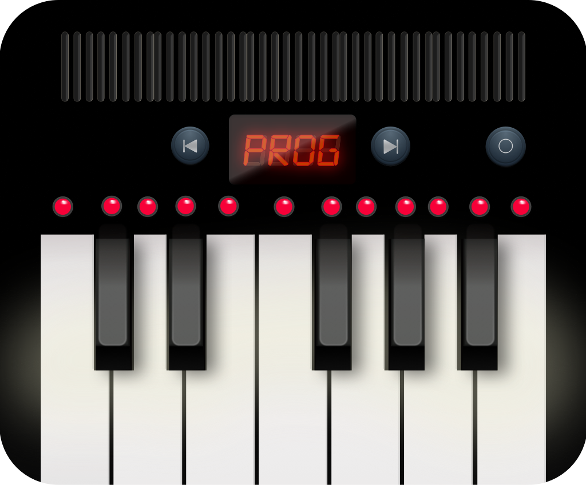
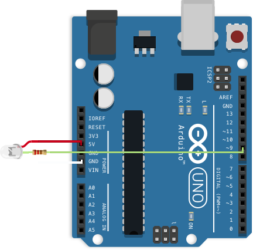
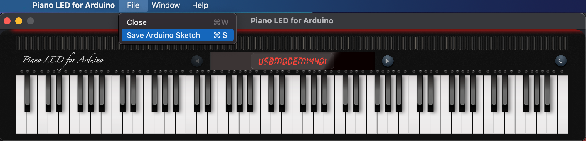
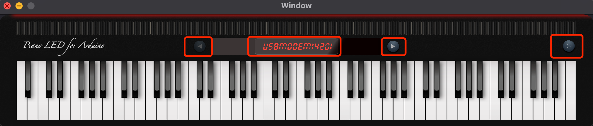

Piano LED for Arduino – 苹果版特效钢琴

介绍
Piano LED for Arduino (以下简称PLA) 是一个完全免费、轻量级无广告的 MacOS 程序，它可以解析电钢琴发送的 MIDI 文件，从而发送控制指令到 Arduino， 从而让您实现通过电钢琴控制 LED 灯带的目的。
下载地址
Piano LED for Arduino v1.0:
效果视频
详细配置教程可参考下文，我已尽可能使用通俗易懂的文字进行说明，但是如果您对硬件或是编程知识实在没有了解，无法独立完成，可以给我邮件寻求帮助，当然我会收取您额外费用为我的个人劳务所得，因为时差或是工作原因，如不能及时回复请见谅 😄
请不要长时间凝视 LED，强光会对您的眼睛造成不可逆回的损害！
原理（数据流）
原理
硬件需求
- Arduino Uno
- 长于1米4的 WS2812B 灯带 (144 灯珠/米)
- 330 欧电阻 （可选）
- 三根根杜邦线，最好带不同颜色便于区分
- 两根 USB 线缆（接口 type B）用于 Arduino 和 电钢琴连接您的 Mac （无线连接有非常明显的延迟）
- MacOS 系统高于 Big Sur (MacOS 11.0)
- 一个电钢琴或是 MIDI 键盘
准备工作
-
还原电钢琴为出厂设置，打开 MIDI 传输功能
-
打开电钢电源后通过 USB 连接您的电脑
-
按照图示，连接 LED 灯带，通常来说，灯带红色需要 5V 电压输入，白色为接地，绿色为控制信号接口，连接到 Arduino 的 9 号针脚。具体链接方法请参照 LED 等待说明为准。
 红色为 5V 电压，绿色连接 330 欧姆后连接 9号针脚，白色接地
-
安装
Arduino IDE for Mac，然后打开软件后下载 Arduino 代码，代码可以通过点击File -> Save Arduino Sketch to Disk下载 Save sketch to your mac
-
在 Arduino IED 中安装 FastLED 库
-
上传刚才下载的代码到 Arduino
-
在打开电钢电源之后启动 PLA，如果已经启动了 PLA，请完全关闭后在开启电钢电源。因为 PLA 只有在软件启动的时候去寻找您的电钢
-
打开 PLA，开始弹奏
快速开始
上传 Arduino 代码仅需要执行一次，在随后的演奏中您只需要连接 Arduino 即可
- 连接 Arduino （这里假设您已经完成代码上传），连接电钢琴并打开电钢的电源
- 启动 PLA 之后通过左右按钮选择 Arduino 的端口
usbmodem14201，端口也许会不同，这里显示的名称应对应 Arduino 在您 Mac 中显示的一致 图片中间显示的目前将要连接的端口，通过左右按钮选择 Arduino 的端口后，点击右侧开始按钮即可连接 Arduino
- 点击右侧的电源按钮即可开始连接.
- 当您看到 LED 灯带从左往右依次闪过的时候，表明连接正常 😄
测试环境为 Arduino Uno, MacBook Pro 16 (2019), Roland FP-90.
关于消息传送
传送到 Arduino 的消息一共有一字节，它包含了音符的状态和音符名称。其中第一比特表示了音符状态，其余七比特表示了音符名称
音符状态
如果第一比特为 1， 表示该音符已经按下，十进制中表示该数值加 128
音符名称
电钢琴一共有 88 个按键，因此音符抬起的时候，发送的范围就是 [21~108] = [0x15~0x6c] = 0b[0001 0101 ~ 0110 1100]。同理音符按下需要递加 128
举例
如果 A0 （钢琴最左侧按键）抬起时，PLA 会发送 21(0x15) 到 Arduino，当按键按下时 PLA 会发送 149(21+128)
如果 C8（钢琴最右侧按键）抬起时，PLA 会发送 108(0x6C) 到 Arduino，当按键按下时 PLA 会发送 236(108+128)